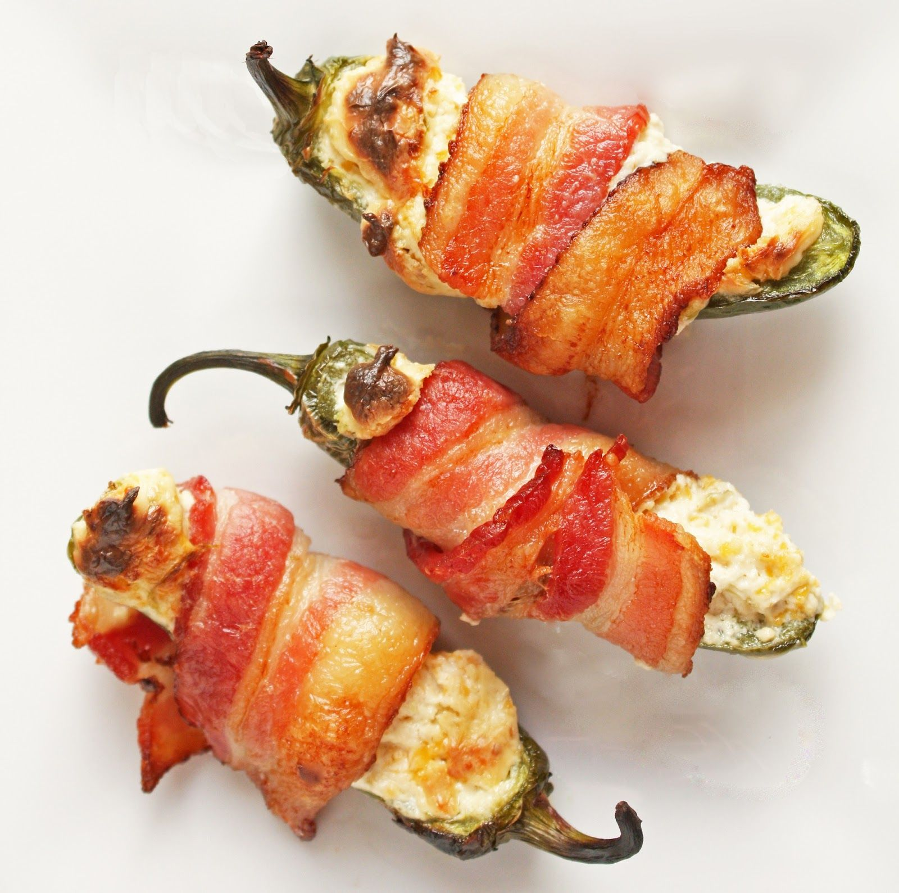

Stuffed Jalapeños

Stuffed jalapeños are perfect for when you want to go crazy!!!!
Ingredients
- 12 fresh jalapeno peppers, halved lengthwise and seeded
- 1 (8 ounce) package whipped cream cheese
- 12 slices bacon, cut in half
Steps
- Preheat oven to 400 degrees F (200 degrees C).
- Stuff each jalapeno half with whipped cream cheese. Wrap a half slice of bacon around each stuffed jalapeno half.
- Arrange wrapped jalapeno halves in a single layer on a medium baking sheet. Bake in the preheated oven 45 minutes, or until bacon is evenly browned and crisp.